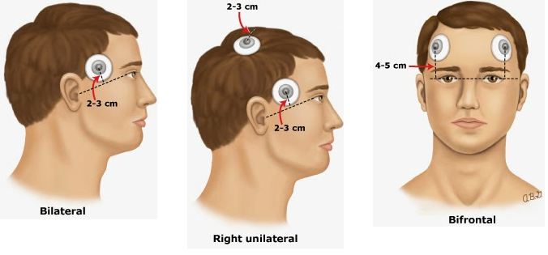
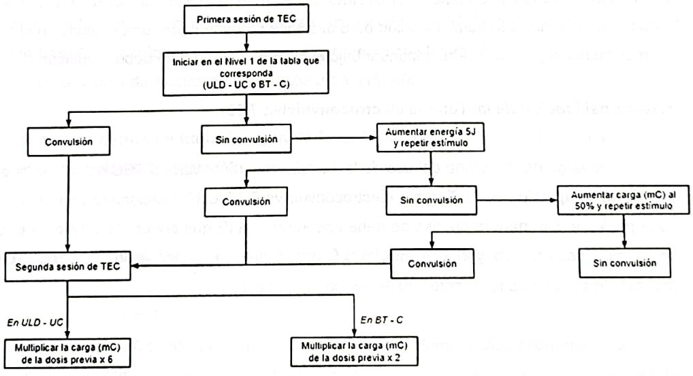
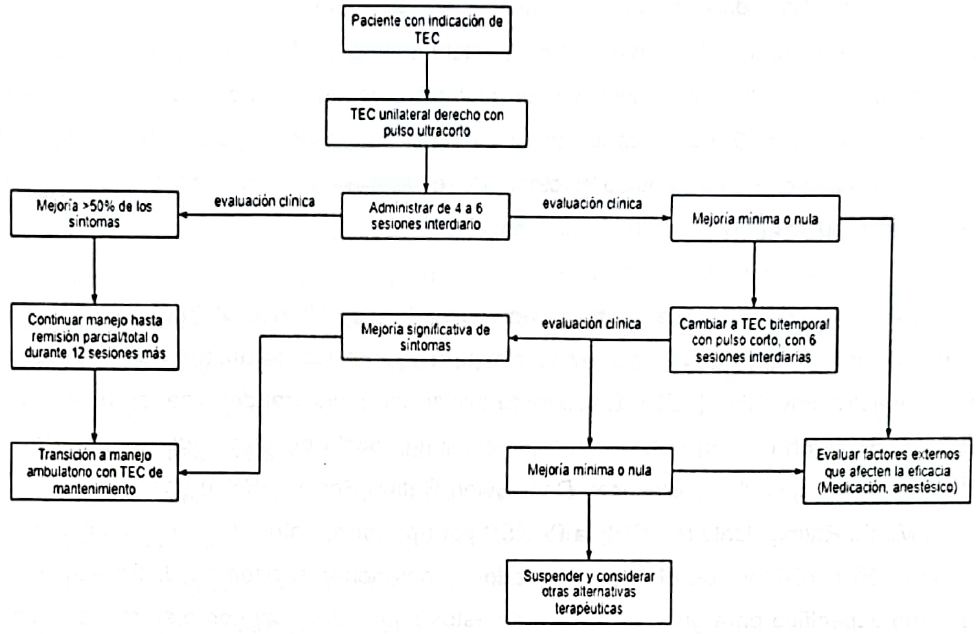
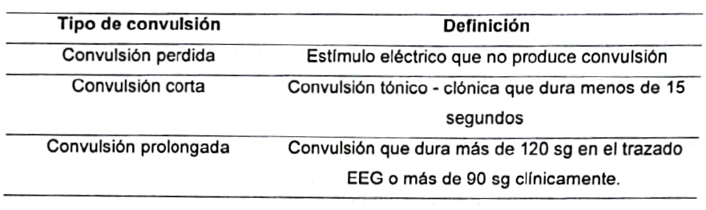
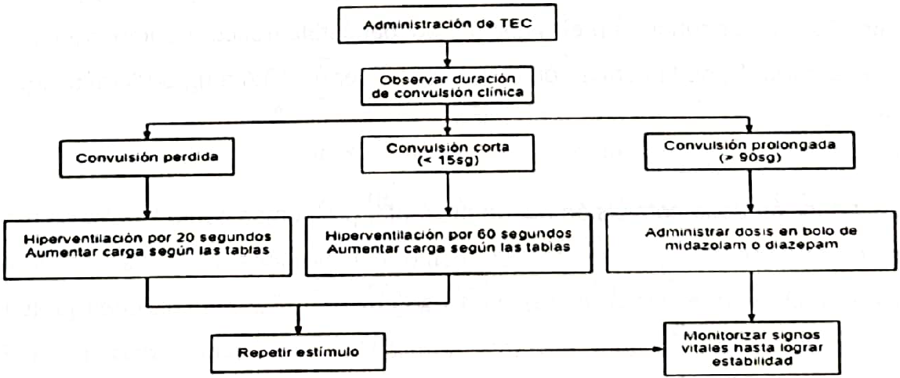

Definición
¿Cómo Funciona?
Indicaciones
Contraindicaciones
Contraindicaciones Absolutas
Contraindicaciones Relativas
Valoración Previa
Durante esta evaluación se revisará:
Si es apto se realizará una evaluación médica:
Riesgos
Preparación y Monitoreo
Frecuencia
Seguridad del Paciente
Equipo
Medicamentos
Documentación
Monitoreo Electroencefalográfico
Electromiografía o monitoreo de contracciones tónico - clónicas
Tipos de administración del estímulo de la TEC
Bitemporal (BT)
Unilateral derecha (ULD)
Ilustración de la ubicación de los electrodos en la TEC
Características del estímulo en la Terapia Electroconvulsiva
TIPO
INTENSIDAD
Algoritmo de pasos a seguir en la primera sesión a la hora de buscar el UC y cómo hacer la titulación
Algoritmo general de administración de TEC según guías de Australia y Nueva Zelanda
Dosificación de la TEC
Parámetros de titulación para la Terapia electroconvulsiva TEC unilateral derecha de pulso ultracorto (ULD - UC)
Parámetros de titulación de TEC bitemporal con pulso corto (BT - C)
Anestesia y Relajación
Pre Oxigenación
Anticolinérgicos
Agentes Anestésicos
Relajantes Musculares
Medicación Cardiovascular
Duración de las convulsiones
Tipos de convulsiones no terapéuticas que pueden ocurrir posterior a la administración de la TEC
Pasos a seguir según el tipo de convulsión no terapéutica que se presente
Recomendaciones y Consideraciones en Comorbilidades de Paciente con Indicación de TEC
Condición Médica |
Recomendaciones y Consideraciones |
|---|---|
|
|
|
|
|
|
|
|
|
|
|
|
|
|
|
|
|
|
|
|
|
|
|